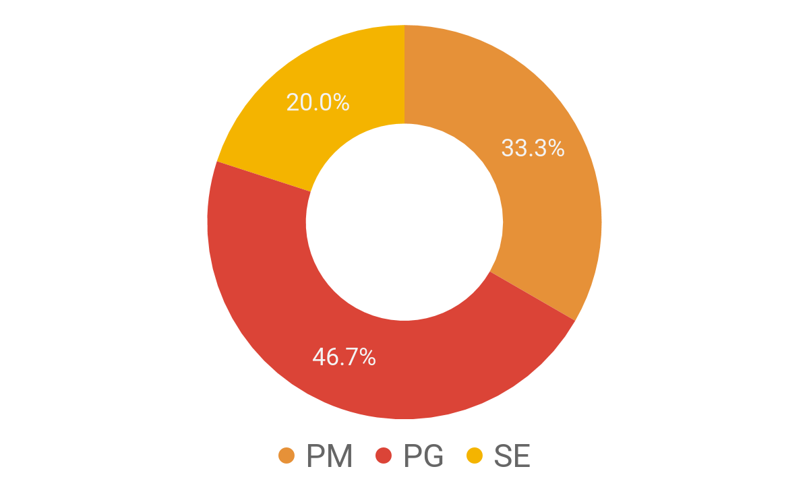

株式会社アーカイブ
株式会社アーカイブ
“日本で働く外国籍ITエンジニアを応援します。”
115-0045
東京都北区赤羽3-22-6-102
tel:03-5939-4070
info@archive-asia.co.jp
会社概要
当社は、日本のＩＴ業界において、高い技術力とグローバル感覚を併せ持ったＩＴエンジニアの皆様が多数活躍できる環境を創出し、エンジニアの皆様と共に成長できる会社になることを目指しています。
| 設立 | 2006年 10月 10日 |
| 資本金 | 6,000,000円 |
| 役員 |
- 代表取締役 角田 元輝
- 取締役 鈴木 隆志
- 取締役 李 埈昊
- 取締役 李 在殷
- 取締役 高 成洙
- 監査役 柴崎 秀明（税理士)
|
| 事業内容 | 外国籍ＩＴエンジニアを中心としたソフトウェア開発 |
| 関連事業 | 並びに外国籍ＩＴエンジニア支援事業 |
エンジニアに対する取組
- 希望するキャリアにマッチする仕事
エンジニアの望むキャリアをしっかりと把握し、可能な限りキャリアにマッチする仕事に従事できるように取組んでいます。
- チーム体制で仕事
仲間同士が相談等しやすいように、可能な限り同じ会社のメンバーと一緒に仕事ができる体制を作っています。
- 働き方を選べる
エンジニアが自分のライフスタイルに合わせて、以下の働き方を選択でき、原則、１年に１回、働き方を変更できる制度を設けています。
- 正社員（無期雇用）、契約社員（有期雇用）
- フリーランス
- 正社員又は契約社員とフリーランスのミックス
※働き方の変更には一定の条件が必要になる場合があります。
- 住居の相談／ご紹介が可能
信頼関係を構築している不動産会社との提携により、住居の相談／ご紹介を可能にしています。
- ビザの相談／手続依頼が可能
当社は、（公益財団法人）入管協会の会員になっており、在留期間更新、資格変更、永住権申請等について、専門的な相談及び入国管理局への各種申請の代理を受けることができます。
求める人物像／技術分野等
当社はアーカイブスタイルと称し、以下のような考え・行動ができる方と一緒に仕事をしたい
と思っています。
アーカイブスタイル
- ポジティブシンキング（Positive Thinking）
- 自発的に行動
- 盛んな学習（技術学習）意欲
- 積極的なコニュニケーション
- 仲間と一緒に成長する協力性
- 業務内容を達成できる圧倒的なスキル
技術分野


保有スキル（言語）
- Phone : iOS, Objective-C/Swift, Android, Kotlin/Java
- Web Application : Java, PHP, Ruby on Rails
- AI : Ruby, Python
- ETC : SAP/R3, COBOL
研修
新人研修
３ヶ月間、業務内容を達成出来るスキル、マナーの研修を実施します。
- 本人希望と案件状況によりMoblie、Web Application、AI(Python)分野などのスキルを研修します。
- 研修で学習したスキルを活用し、個人プロジェクトの完成を目標とします。
- 社内ルール（アーカイブスタイル）に従い必要なマナーを身につけます。
スキルチェンジ研修
IT業界のスキル変化は激しいと言われています。その変化に柔軟に対応できるようにサポートします。
- 関連書籍、ネット講座サポート
- 社内勉強会開催
語学研修
外国籍ＩＴエンジニアの方向けに、日本人、及びバイリンガルエンジニアから、日本語の研修を受けることができます。
福利厚生
- 各種社会保険完備
- 交通費支給（上限20,000円）
- PC(Macbook or Windows)支給
- 社員懇親補助制度
※福利厚生については社員のみ対象とします。
当社にご興味を持っていただけたら幸いです。お気軽にご連絡ください。